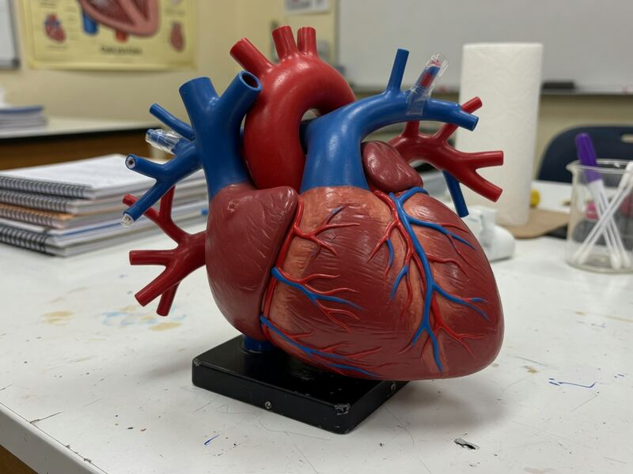

生命5–11 岁本地观察
肺与呼吸观察站
吸气不是肺用嘴去嘬。膈肌往下、肋骨往外，胸腔变大，里面气压变低，外面的空气就被推进来；呼气时胸腔变小，废气被挤出去。点吸气和呼气，看两片肺谁更大、膈肌往哪走。氧在很小的气囊里进血。本页不是医疗建议，也不做憋气比赛，不要堵口鼻。台上数字只比较进出方向，不是肺活量成绩单。
吸气和呼气，肺谁更大

先点「吸气」，再点「呼气」。看两片肺谁更大，膈肌往哪边走。
肺换气台 · 真参数
调潮气量与呼吸频率。每一次吸呼交换空气；量够、节奏合适，氧气才更够——不是「憋越久越好」。
潮气量是每一次吸进来的量；频率是一分钟做几次。浅而慢，肺泡换气就少。不是憋越久越好。
先猜一猜，再拖滑杆
第 1 题：潮气量够、频率够（潮气量 30、频率 10）。气是膈肌拉开胸腔推进来，还是憋越久越好？
先押一个，再拖到 潮气量 30、呼吸频率 10。
第 2 题：潮气量 5、频率 3，还够氧吗？
押好后拖到 潮气量 5、呼吸频率 3。
第 3 题：潮气量最少 4、频率最弱 2。还能明显够氧吗？
押好后潮气量 4、频率 2。
呼吸图鉴
下面有 12 张卡。点一张，对照舞台上看它在哪。鱼的鳃不是人的肺。
点一张图鉴，对照舞台上看它在哪。
猜一猜
吸气时，气为什么会自己进肺？
先押一个，再点「看答案」。
任务：比肺在哪一次更大
点一次「吸气」、一次「呼气」，看两片肺谁更大。再点一颗按钮，说出你的观察。
开放式提示不会代替上面的正式任务。
尚未完成：先点一次吸气，再点一次呼气。
空气怎样被「推进」肺里，又怎样把废气挤出去
先点「吸气」，再对照「呼气」。吸气时膈肌往下让，胸腔变大，里面气压变低，外面的空气就被推进来。肺跟着胸腔变大变小，自己没有吸盘嘴——不是「肺在嘬气」。安静呼气多半靠弹性回缩，用力呼气才会明显动用腹肌。因果链要按顺序讲：肌肉→容积变大→肺内压变低→气体进来。
肺泡是许多很小的气囊，把接触面摊开，氧才来得及进血；气在气管里来回走动，几乎不在那里「消化」。鱼用鳃丝在水流里换气，介质是水，零件也不是肺。昆虫的气管把气直接送到组织，不经过血。三条路共同点是接触面要大，路可以完全不同。
因为长时间憋气或不适还比会伤人，所以不做憋气赛，头晕、胸口不适立刻停，告诉大人。瓶子模型只由成人演示，绝不堵孩子口鼻。舞台上的「换气」读数只比较潮气量和频率，不是肺活量诊断，更不是医疗说明书。
膈肌往下拉，胸腔变大，气才被推进来
同一口气、同一块膈肌，先只改容积这一项：先做一次慢吸慢呼，手放在肚腹感受膈的上下。吸气时这块肌肉往下让，胸腔变大，里面气压变低，外面的气被推进来。再对照「嘬气」：肺自己没有强力吸盘嘴，气流是压差推出来的，不是嘴巴吸出来的。
完成句写「胸腔变大，气被推进来」或「肺没有吸盘」。禁止「肺在嘬」，也禁止教室里比谁憋得更久。因为长时间憋气或不适还比会伤人，所以头晕立刻停，不堵口鼻。
两片肺跟着胸腔变大变小，本身不是强力吸盘。划掉「用嘴使劲去嘬气」。
吸气时膈肌下降，胸腔变高变大；安静呼气多靠弹性回缩。顺序是腔先变。
肺内压低于外面，气才涌进来；高于外面，气才被挤出去。不是肺在喝气。
许多很小的气囊把接触面摊开，氧才来得及进血。肺泡是交换面，不测肺活量。

鱼用鳃丝在水流里换气，介质是水，不是空气；零件是鳃丝，不要写成肺。
不做谁憋得久；头晕、胸口不适立刻停，告诉大人。这不是医疗建议，也不是比赛。
- 摸呼吸。慢吸时肚腹或下胸是否外扩？那是容积在变。
- 说压差。用「胸腔变大→气压变低→气进来」讲一遍，不要说「肺在嘬」。
- 点肺泡。氧大概在这些小气囊里进血，不是在气管里「消化」。
- 拒比赛。写出一条呼吸安全规则：不适即停。
吸气时肚子这边往下让，胸腔变大，空气被推进来；呼气时再挤出去。我们不做憋气比赛。
呼吸是容积泵制造气压差：胸腔变大则吸，变小则呼。肺泡把交换面摊开。鱼的鳃在水里换气，和人的肺不是同一套零件。不做憋气赛。
胸廓顺应性影响同样肌肉能造成多大容积变化。解剖死腔里的气来回走动却几乎不换气。血红蛋白载氧是交换之后的运输课，本页点到即可。模型不是肺活量诊断。
这在教什么：孩子应能说出膈肌往下、胸腔变大、气压变低，气才被推进来，并否定「肺在嘬气」。因为长时间憋气或不适还比会伤人，所以不做憋气赛，头晕立刻停。
- 是谁在「吸」？肺有没有长出吸盘嘴？
- 气为什么会自己进肺？先变大还是先有气流？
- 鱼的鳃和人的肺，介质和零件哪里不同？
- 教室里能比谁憋得更久吗？为什么不行？
气压差一句话训练
把吸气缩成因果链：肌肉把胸腔拉大→容积变大→肺内压变低→气体进来。完成句把呼气链对称写一遍：胸腔变小→里面压强变高→气被挤出去。安静时呼气多靠弹性回缩，所以休息时不怎么费劲；用力呼气才会明显动用腹肌。
瓶子模型只给成人演示，绝不堵孩子的口鼻。氧进了血，才跟着血流到全身——细节去循环或人体页。解剖死腔里的气来回走动却几乎不换气，本页点到即可。
胸廓被紧紧箍住，吸气会难在「容积变大」这一步，不是「肺突然变懒」。血红蛋白载氧是交换之后的运输课，不要和「气怎么进来」叠成一句。
因为长时间憋气或不适还比会伤人，所以不做谁憋得久、谁次数多的比赛。这是看气怎么进出，不是看病、不是测肺活量。本页读数不要抄进病历。
肌肉把胸腔拉大，里面压强变低，气才被推进来。肺不是吸尘器，也不是嘴在喝气。
胸腔变小，里面压强变高，气被挤出去；安静时多靠弹性回缩，不是猛吹比赛。
瓶子模型只给成人演示，绝不堵孩子的口鼻。不要拿呼吸当游戏去玩。
氧进了血，才跟着血流到全身。气先进肺，再交给血，两步不要并成一句魔法。
不要堵口鼻做呼吸游戏。也不做谁憋得久、谁次数多的比赛，头晕立刻停。
这是看气怎么进出，不是看病、不是测肺活量比赛。头晕立刻停，告诉大人。
对照卡：肺 vs 鳃 vs 气管系统（昆虫点到）
三列都在换气，介质和零件不同。甲：肺换空气，胸腔当泵，肺泡把接触面摊开，再交给血。乙：鳃换水里的氧，薄片让水和血流对过。丙：昆虫气管把气直接送到组织，不经过血。否决句：「三条路都是同一种呼吸器。」「肺在嘬气。」
完成句三行各写介质：空气、水、直达组织。对照目的是打开「换气可以有多条路」，不是背名词表。共同点是接触面要大。本页读数只比较方向，不是医疗诊断。
肺换空气：胸腔变大，气压变低，气被推进来，再交给血。完成句写「腔大压低气进」。
鳃换水里的氧，薄片让水和血流对过。介质是水，和肺不是同一套零件。

昆虫的气管把气直接送到组织，不经过血。三条换气路不要叫成同一种。
三行各写介质：空气、水、直达组织。共同点是接触面要大，换气的路可以不同。
三条换气路不要叫成同一种「呼吸器」。肺、鳃、昆虫气管各走各的一套零件。
共同点是接触面要大，路可以完全不同。本页主戏仍是胸腔变大、气进来。
安静呼吸数三十秒
静坐数呼吸大约 30 秒，数完乘 2，大约就是一分钟的次数。只作观察，不是比赛肺活量。跑完再数一次，通常会更快——这是在加快换气，不是谁更厉害。次数只是旁证，主课仍是胸腔变大、气压变低、气进来。
口头只要两句：「膈肌往下，气被推进来。」「肺没有吸盘嘴。」有人说「肺在嘬」，让孩子指着肚腹那一次外扩反驳。
因为长时间憋气或不适还比会伤人，所以不做谁憋得久。头晕、胸口不适立刻停，告诉大人。孩子呼吸困难、嘴唇发紫或喘不过气，立刻就医。本页数字不要抄进病历。
静坐数呼吸约 30 秒，乘二估每分钟次数，只作观察，不是谁次数多的比赛。
三十秒数完，乘 2就大约是一分钟的次数；只作观察，头晕立刻停，告诉大人。
跑完再数一次，通常会更快，这是在加快换气，不是比赛谁肺活量更大。
不做谁憋得久、谁次数多的比赛。次数只是旁证，主课是腔大压低气进。
写下安静时大约一分钟几次，头晕立刻停，告诉大人。本页不是医疗建议。
次数只是旁证，主课仍是胸腔变大、气压变低、气被推进来。口鼻不要堵。
怎样才算公平的一次比较
想知道「气是被推进来的还是被嘬进去的」，就只改胸腔容积这一项。同一口气，先看吸气时肚子这边是否外扩，再看呼气时是否回缩。把「鱼也在呼吸」叠进同一档，分不清到底是压差，还是介质换了。
- 只改这一项：胸腔变大还是变小（或空气还是水）。
- 先保持不变：同一次慢吸慢呼、同一块膈肌、同一条不适即停。
- 要观察的：肚腹是否外扩；气流是在变大之后才进来。
- 另开一行：鳃和气管去对照卡，不要和「憋气赛」叠在一起。
还可以问下去
- 若胸廓被紧紧箍住，吸气会难在哪一步：肌肉没动，还是容积变不大、压差做不出来？
- 安静呼气为什么不怎么费劲？用力呼气才动用哪一层肌肉？
- 跑步后呼吸变快，主要在换什么？能不能说成「肺活量比赛赢了」？
按年龄分层的讲法
同一个现象，三个年龄段讲到哪一层。建议只讲孩子当前那一层，讲完就停，不要把顺应性公式提前塞进四岁耳朵。
吸气时肚子这边往下让，胸腔变大，空气被推进来；呼气时再挤出去。我们不做憋气比赛。
呼吸是容积泵制造气压差：胸腔变大则吸，变小则呼。肺泡把交换面摊开。鱼的鳃在水里换气，和人的肺不是同一套零件。本页数字只用来比较，不是肺活量表。
胸廓顺应性影响同样肌肉能造成多大容积变化。解剖死腔里的气来回走动却几乎不换气。血红蛋白载氧是交换之后的运输课。观身礼貌：不适即停、不堵口鼻，是在保护换气，不只是纪律。
给家长的问题
- 是谁在「吸」？肺有没有长出吸盘嘴？让他再指一次膈肌往下的那一下。
- 气为什么会自己进肺？先变大还是先有气流？胸廓被箍住会难在哪一步？
- 鱼的鳃和人的肺，介质和零件哪里不同？昆虫气管为什么不经过血？
- 安静呼气为什么不怎么费劲？跑步后变快，是在比赛肺活量吗？
- 因为长时间憋气或不适还比会伤人，所以教室里能比谁憋得更久吗？
- 本页「换气」读数能当肺活量诊断吗？它比较的是潮气量和频率，还是病历？
- 「肺像气球自己鼓起来」哪里错了？容积泵和吸盘嘴差在哪？
背后的原理
舞台上不写这些词，留给孩子用眼睛看。家长可以指着图讲：流体从高压流向低压，呼吸是制造可控压差。膈肌下降、胸廓上抬，胸腔容积变大，肺内压低于大气，气被推进来。肺是弹性囊，跟着胸腔走，没有吸盘嘴。
肺泡极大表面积补偿气体扩散的慢。安静呼气常被动，用力呼气才显著动用肌肉。本页「换气≈潮气量×频率÷15」只是比较尺子，用来让孩子看见「次数和深度都会变」，不是肺活量诊断，也不是医疗说明书。
跨物种换气器官匹配介质含氧量与黏度：鳃对水，肺对空气，昆虫气管直达组织。三条路不要叫成同一种「呼吸器」。
观察安全：不做憋气赛，不堵口鼻，不适即停。孩子呼吸困难、嘴唇发紫或喘不过气，立刻告诉大人并就医。常见误会：肺主动嘬、憋气越久越健康、气进胃也算呼吸成功。纠正。本页不教医疗。
肺公式卡 · 换气≈潮气量×频率÷15；换气≥10 氧气更够；肺泡换气
模型简化；运动时频率与深度都会变。不鼓励孩子比赛憋气。
接下来可以去
带走句：膈肌往下拉，胸腔变大，气才被推进来；不是憋越久越好。消化页看另一套拆开食物的账。